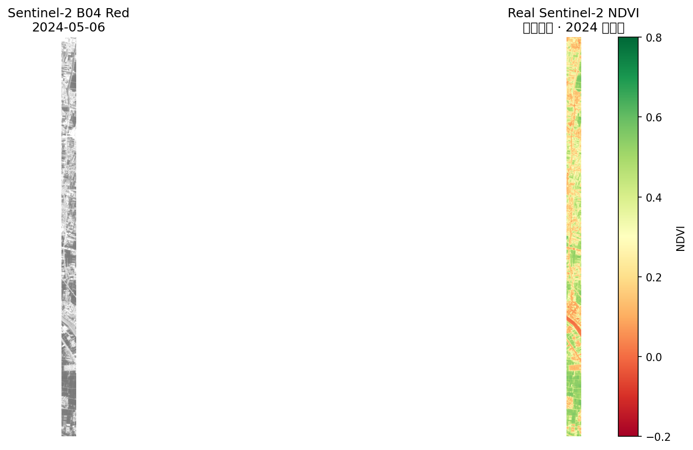
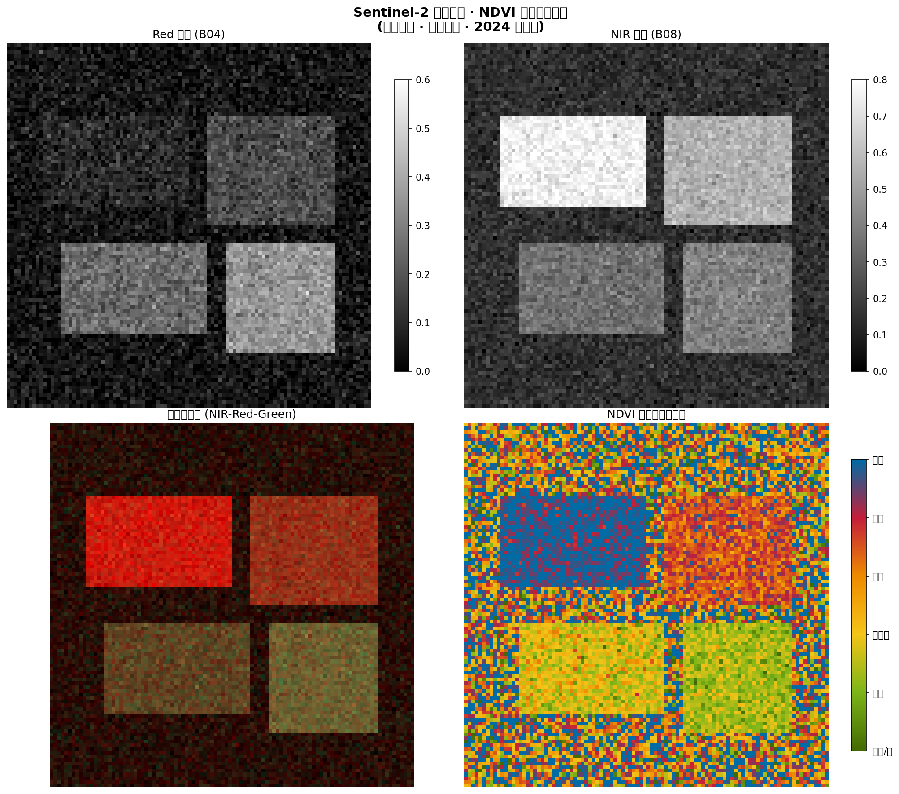
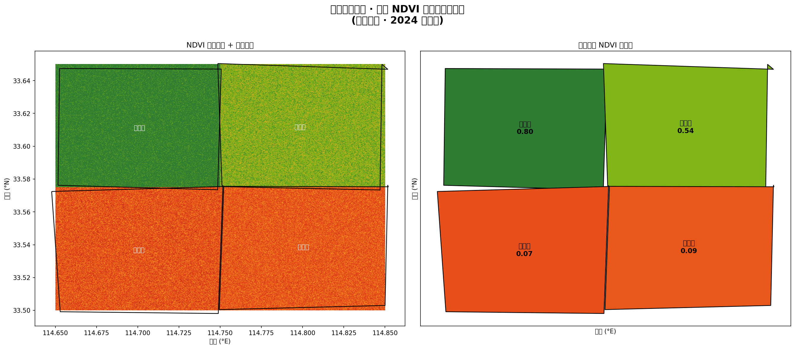

STAC 搜索
pystac_client.Client → Planetary Computer STAC → bbox 河南周口 + 云量 < 40% + 2024 小麦季
Planetary Computer 零注册数据源 · GeoPandas + Rasterio 本地管线 · PROJ Bug 绕过实战
阶段 3B 是 AI for Agriculture 项目的遥感 + GIS 子项目。目标是用开源工具链搭建一条从原始卫星影像到县域作物健康专题图的完整管线，为后续阶段的病害识别模型和产量预测提供地理空间基础。
阶段 2 踩过 GEE 认证反复失败的坑，阶段 3B 严格遵循"零注册、国内直连"原则。最终敲定两套完美方案：
| 数据源 | 注册 | 国内速度 | COG 支持 | 结论 |
|---|---|---|---|---|
| Planetary Computer（微软） | ❌ 零注册 | ⚡ 直连 OK | ✅ COG /vsicurl/ | ✅ 最佳 |
| Copernicus Data Space | ⚠️ 需注册 | 🐢 慢 / 限流 429 | ✅ COG | ❌ 放弃 |
| Google Earth Engine | ⚠️ OAuth 认证 | 🚫 国内连接失败 | — | ❌ 彻底放弃 |
https://geo.datav.aliyun.com/areas_v3/bound/410000_full.json —— 阿里 DataV 地理可视化平台，提供全国省-市-县三级 GeoJSON。河南 adcode=410000，_full 参数返回所有子级。
DataV _full 在顶层 features 数组里返回子级（children 嵌套），需要递归展平。实测 河南 410000_full 返回 18 个地级市（level=city），县域级可能需要进一步请求子级 adcode。
这是阶段 3B 最棘手的技术障碍。GeoPandas 读任何 GeoJSON/Shapefile 都会崩溃，根因是 pyproj 3.7.1 的 from_epsg() 系列方法无法加载 PROJ 数据库。
pyproj.exceptions.CRSError: Invalid projection: EPSG:4326:
(Internal Proj Error: proj_create: no database context specified)pyproj.datadir.get_data_dir() → 正确返回 PROJ 目录proj.db 存在（9.2 MB），用 SQLite 直接查询 EPSG:4326 → ✅ 数据完整CRS.from_epsg(4326) → ❌ 崩溃CRS.from_proj4("+proj=longlat +datum=WGS84") → ✅ 成功CRS.from_wkt("...WGS 84...") → ✅ 成功结论：pyproj 3.7.x 的 EPSG 查询链路有 bug，但 PROJ4 字符串和 WKT 链路完好。这不是用户环境问题，降级 pyproj / 重装 PROJ 都不会解决。
from pyproj import CRS
# ❌ 不要用这些
CRS.from_epsg(4326)
CRS("EPSG:4326")
# ✅ 用这些代替
WGS84 = CRS.from_proj4("+proj=longlat +datum=WGS84")
UTM50N = CRS.from_proj4("+proj=utm +zone=50 +datum=WGS84")
# GeoDataFrame 投影变换
gdf_utm = gdf.to_crs(UTM50N)
import os
os.environ["CURL_CA_BUNDLE"] = "" # Windows 必须！避免 SSL 错误
from pystac_client import Client
import planetary_computer as pc
import rasterio
from rasterio.windows import from_bounds
from rasterio.warp import transform_bounds
# Step 1: STAC 搜索
api = Client.open("https://planetarycomputer.microsoft.com/api/stac/v1")
search = api.search(
collections=["sentinel-2-l2a"],
bbox=[114.65, 33.50, 114.85, 33.65], # 周口
datetime="2024-04-01/2024-05-31",
query={"eo:cloud_cover": {"lt": 40}},
limit=5
)
item = pc.sign(list(search.items())[0])
# Step 2: 远程 COG 裁剪
red_url = "/vsicurl/" + item.assets["B04"].href
nir_url = "/vsicurl/" + item.assets["B08"].href
with rasterio.open(red_url) as src:
utm_bbox = transform_bounds("EPSG:4326", src.crs, *bbox)
w = from_bounds(*utm_bbox, src.transform)
red = src.read(1, window=w).astype("float32") / 10000.0
# Step 3: NDVI
ndvi = (nir - red) / (nir + red + 1e-8)
这个分布符合预期：周口 2024 年 5 月上旬是冬小麦灌浆期，NDVI 应该在 0.3~0.6 之间。均值 0.311 说明部分区域可能是裸土（0-0.2）或稀疏植被（轮作/休耕地）。33.5% 的茂盛植被区可能是生长良好的小麦田块。


| # | 问题 | 阻塞级别 | 建议方案 |
|---|---|---|---|
| 1 | 河南全省 COG 裁剪 OOM 单分区 10980×10980 像素覆盖不了全省；多分区拼接逻辑未写 |
⚠️ 中 | 遍历所有覆盖河南的 S2 分区（约 6-8 个），逐分区裁剪后用 rasterio.merge 拼接 |
| 2 | DataV GeoJSON 只有 18 地级市 需要县域级（约 158 个） |
⚠️ 中 | 先拉 18 地级市 adcode，再逐个请求 {adcode}_full.json 获取下属县域 |
| 3 | pyproj PROJ DB bug from_epsg 系全部崩溃 |
❌ 高 | 已用 from_proj4 绕过；长期需升级 pyproj 或改 conda-forge 源 |
| 4 | Zonal Statistics 未完成 rasterstats 叠加全省 NDVI + 158 县域 |
⚠️ 中 | 等问题 1、2 解决后直接调用 rasterstats.zonal_stats() |
| 5 | 云量约束太松（40%） 河南全省大分区可能选不到晴朗影像 |
✅ 低 | 收紧到 20% 或多景 mosaic 融合（stackstac / odc-stac） |
脚本里 os.environ["PROJ_LIB"] = ... 没用——因为 pyproj / pyogrio 在 import 阶段就加载了 PROJ 上下文。必须在 PowerShell 里 $env:PROJ_LIB = ... 再启动 Python。但即使这样，pyproj 3.7.1 的 from_epsg 还是坏的。
一景 S2 L2A 约 1.2 GB，下载再裁剪既慢又占磁盘。用 /vsicurl/ + rasterio.windows.from_bounds() 只传窗口范围的字节，实测周口裁剪只需几秒。
微软托管、STAC API 标准、COG 格式、planetary_computer.sign() 自动签名。国内直连速度 OK。完全不需要注册 / API Key / OAuth。
阿里 DataV 用的是国家基础地理数据，覆盖全国省-市-县三级，GeoJSON 格式，无需注册直接拉。注意 children 嵌套结构需要递归展平。